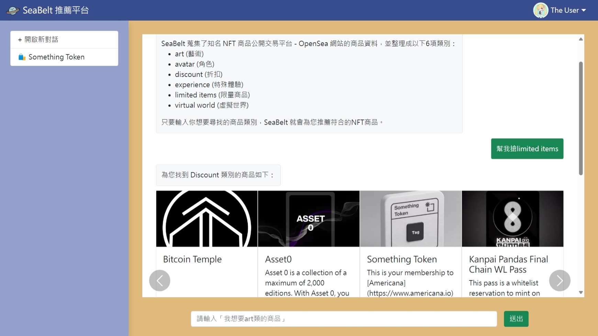

1. SeaBelt
2023年6-8月於工研院「Fintech AI 金融與行銷大數據養成班」的期末團體專題作品，以 Vue.js 框架設計前端，並以 python 、 MySQL 資料庫設計後端及資料分析程式，完成一套 NFT 商品推薦系統。
系統具體功能為，抓取知名 NFT 商品公開交易平台 - OpenSea 網站上各商品敘述為分析依據，利用 TF-IDF 方法及 BART 模型分析商品的所屬分類及相似商品。使用者可利用 LINE 帳號登入網站，並輸入想要尋找的商品類別，系統將推薦符合條件的商品。此外，系統會自動記住使用者的點擊商品紀錄，並適時推薦其他相似的商品。
本系統運作於 AWS 雲端上，在建置時使用到 AWS RDS 的 MySQL 資料庫，以及 AWS Lambda 的資料處理程式，最終將網站部署到 AWS Lightsail 服務。